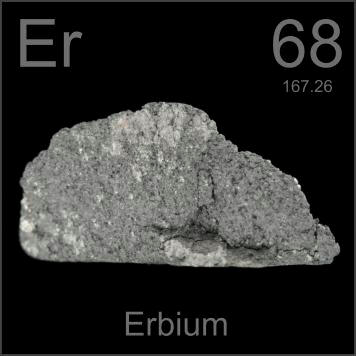

HOME
PREVIOUS
NEXT

Erbium
Atomic Weight: 167.259
Density: 9.066 g/cm3
Melting Point: 1497 °C
Boiling Point: 2868 °C
Erbium is used to dope fiber optic cables to improve their information carrying capability, which it does by helping to amplify the signal. It can also impart interesting colors to pottery glazes.